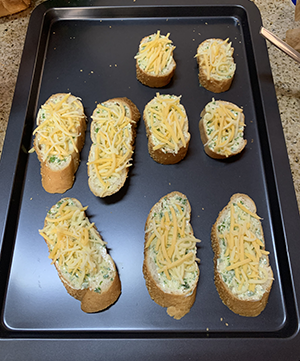

Ingredients

- One baguette
- Salted butter (room temperature)
- Three cloves of garlic
- Parsley (ground)
- Grated mozarella cheese
- Grated cheddar cheese
Preparation
- Preheat the oven to 200 degrees Celsius.
- Evenly slice the baguette, slicing diagonally.
- Mix 3 tablespoons of salted butter with the ground parsley.
- Slather one side of the sliced baguette pieces with the butter mixture.
- Add an even amount of mozarella and cheddar to the buttered side of the bread.
- Place the prepared garlic bread on a baking tray, and place into oven.
- When the cheese melts and begins to turn a golden colour, remove the tray from the oven.
- Your garlic bread is ready to serve!